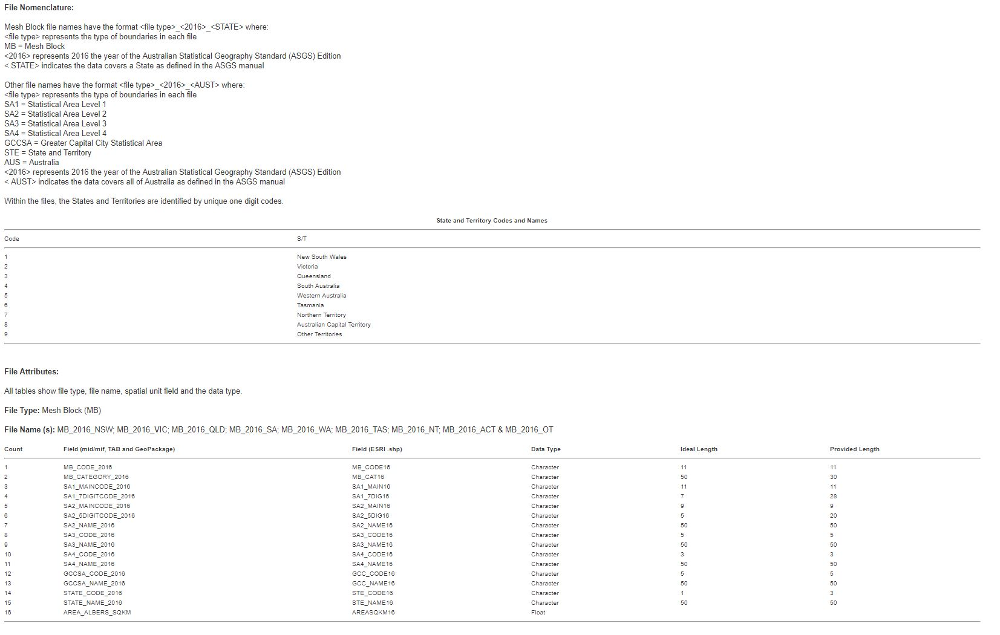
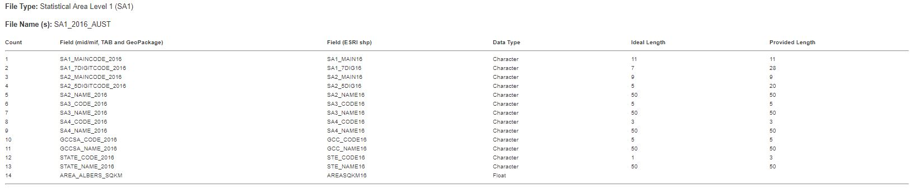
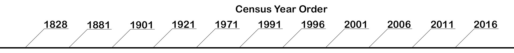

What is a Mesh Block?
Mesh Block is defined to be the smallest geographical area for which statistical data is collected and processed from the Census which form the building blocks for larger regions of Australia. The Australian Statistical Geography Standard contains approximately 347,000 Mesh Blocks in the 2011 Census and 358,122 Mesh in the 2016 census Blocks which covers over Australia.

What is a SA1?
Mesh Block is defined to be the smallest geographical area for which statistical data is collected and processed from the Census which form the building blocks for larger regions of Australia. The Australian Statistical Geography Standard contains approximately 347,000 Mesh Blocks in the 2011 Census and 358,122 Mesh in the 2016 census Blocks which covers over Australia.

What years does the Census take place?

What is Data Journalism?
Data Journalism is the use of collected data to analysis its context to create a news story. Most stories involve graphs and charts to visualise the data in an easier fashion for people to understand the story created. Due to todays Digital Age the amount of information available for the public is immense, therefore Data Journalism as a branch of journalism is better suited for Journalists as the software available that they can use can create and find patterns through the vast amount of user data.
A good example of a Data Journalism Story is the “Race Behind Bars” – The New York Times. Where Journalist’s “Michael Schwirtz, Michael Winerip and Robert Gebeloff” uses data to share the story of how black prisoners are treated compared to white prisoners in an unbiased format.